Akatsuki es una organización de ninjas renegados
del universo de Naruto. A lo largo de la historia,
sus objetivos cambian, hasta convertirse en una
amenaza para las grandes aldeas ninja. Sus miembros
son reconocidos por sus capas negras con nubes rojas.
Miembros más populares:
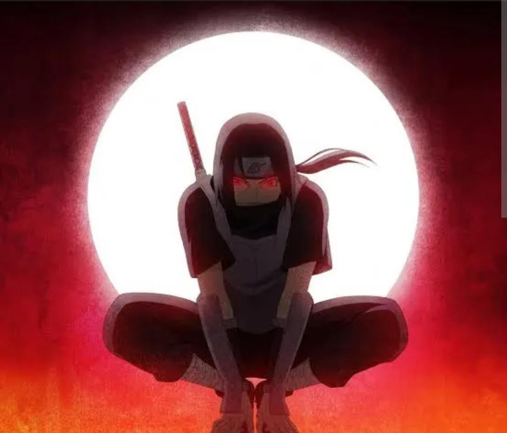
Itachi Uchiha
Aldea de origen: Konohagakure.
Habilidad principal: Sharingan y genjutsu.
Personalidad: Inteligente, tranquilo y reservado.
Función en Akatsuki: Capturar a los Bijū junto con Kisame.
Historia: Desde pequeño, Itachi destacó por su talento como ninja. Durante un conflicto entre su clan y la aldea, recibió la misión de exterminar al clan Uchiha, pero decidió perdonar a su hermano menor, Sasuke. Después abandonó Konoha y se unió a Akatsuki.
Dato curioso: Cargó con el odio de su hermano para protegerlo y mantener oculta la verdad sobre aquella tragedia.
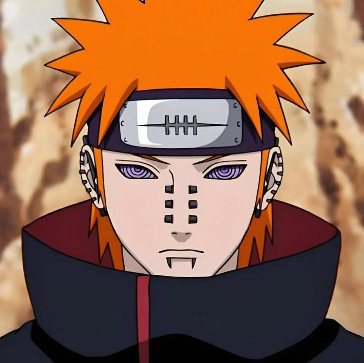
Pain (Nagato Uzumaki)
Aldea de origen: Amegakure.
Habilidad principal: Rinnegan y los Seis Caminos de Pain.
Personalidad: Serio, decidido y marcado por el sufrimiento.
Función en Akatsuki: Dirigir las operaciones de la organización.
Historia: Nagato perdió a sus padres durante la guerra y conoció a Yahiko y Konan. Juntos fundaron la Akatsuki original para buscar la paz. Tras la muerte de Yahiko, Nagato cambió su forma de ver el mundo y comenzó a creer que el sufrimiento podía imponer la paz.
Dato curioso: Controlaba seis cuerpos distintos para combatir como Pain.
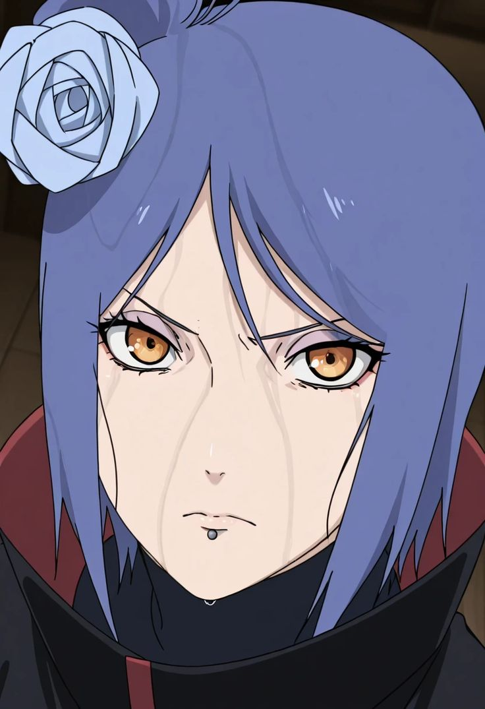
Konan
Aldea de origen: Amegakure.
Habilidad principal: Manipulación del papel mediante ninjutsu.
Personalidad: Reservada, leal y determinada.
Función en Akatsuki: Apoyar a Nagato y proteger sus ideales.
Historia: Konan quedó huérfana durante la guerra y conoció a Yahiko y Nagato. Los tres fundaron la Akatsuki original con la esperanza de terminar con los conflictos. Después de la muerte de Yahiko, permaneció al lado de Nagato.
Dato curioso: Puede transformar su cuerpo en hojas de papel para atacar y defenderse.
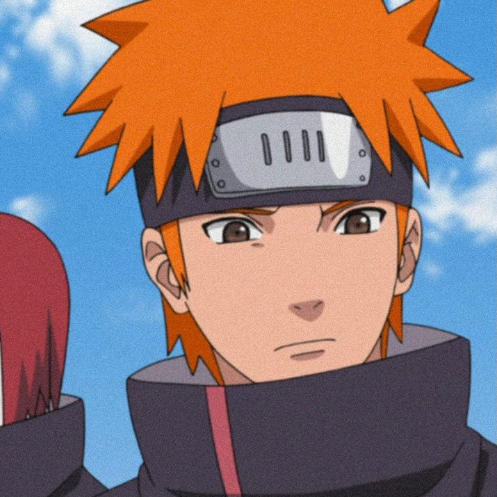
Yahiko
Aldea de origen: Amegakure.
Habilidad principal: Ninjutsu y técnicas con armas ninja.
Personalidad: Carismático, valiente y decidido.
Función en Akatsuki: Fundador y líder original de la organización.
Historia: Yahiko quedó huérfano durante las guerras ninja y conoció a Nagato y Konan. Juntos soñaron con crear un mundo sin guerras y fundaron Akatsuki para conseguir la paz. Sin embargo, Hanzo y Danzo organizaron una trampa que terminó provocando su muerte.
Dato curioso: Después de su muerte, Nagato utilizó su cuerpo como el Camino Deva de Pain.
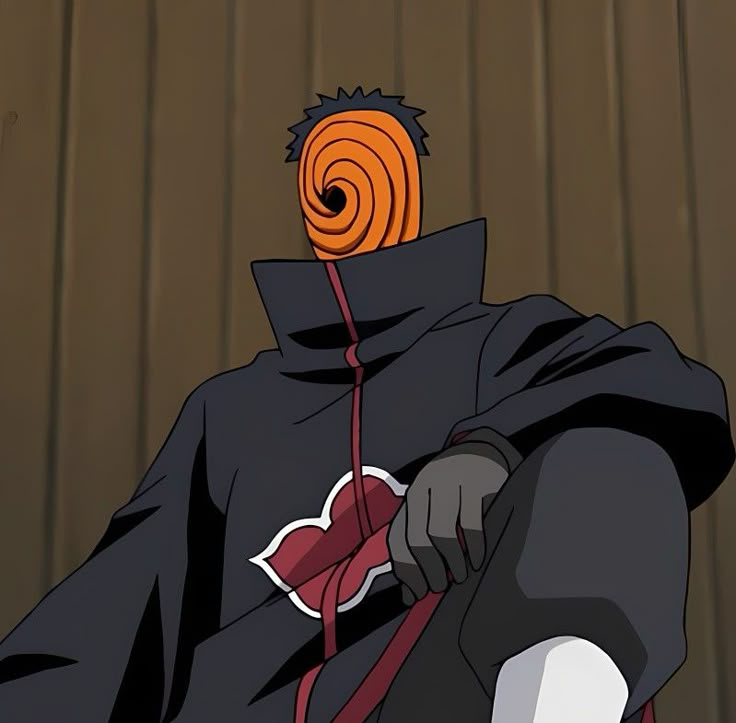
Tobi (Obito Uchiha)
Aldea de origen: Konohagakure.
Habilidad principal: Sharingan y Kamui.
Personalidad: Bromista como Tobi, pero calculador y manipulador en secreto.
Función en Akatsuki: Manipular los planes de la organización y promover el Plan Ojo de la Luna.
Historia: Obito fue compañero de Kakashi y Rin, y fue dado por muerto durante una misión. Madara Uchiha lo rescató y terminó influyendo en su visión del mundo. Años después, Obito utilizó la identidad de Tobi y fingió ser Madara para impulsar sus planes.
Dato curioso: Kamui le permite trasladarse a otra dimensión y evitar muchos ataques al volver intangible su cuerpo.
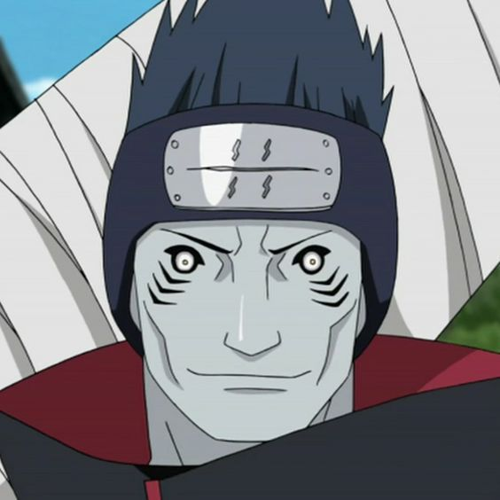
Kisame Hoshigaki
Aldea de origen: Kirigakure.
Habilidad principal: Ninjutsu de agua y grandes reservas de chakra.
Personalidad: Imponente, persistente y leal.
Función en Akatsuki: Capturar a los Bijū junto con Itachi.
Historia: Kisame creció en la Aldea Oculta de la Niebla, donde las misiones secretas marcaron su vida. Tras descubrir la corrupción detrás de algunas órdenes, terminó siguiendo a Obito, quien se presentó como Madara Uchiha, y se unió a Akatsuki.
Dato curioso: Su espada Samehada puede absorber el chakra de sus oponentes.
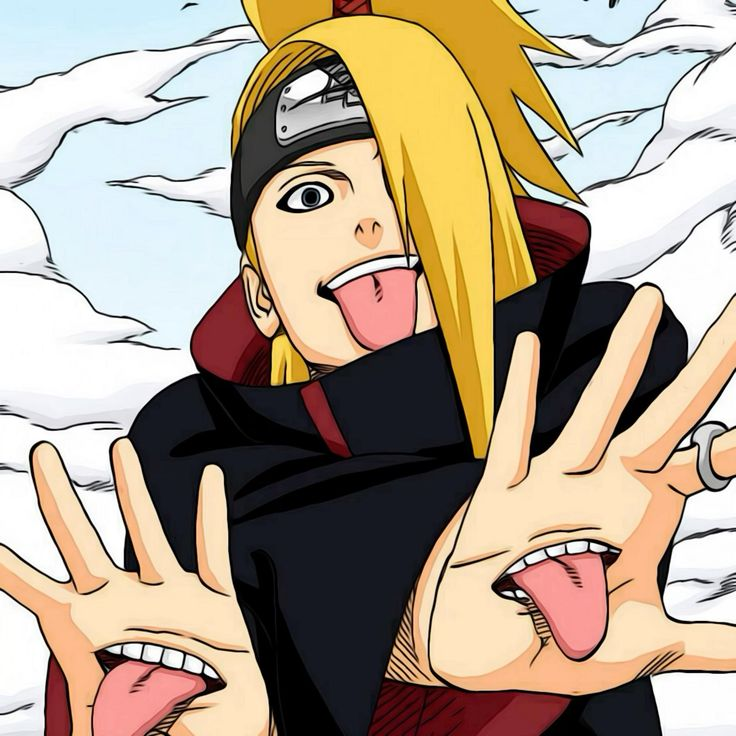
Deidara
Aldea de origen: Iwagakure.
Habilidad principal: Arcilla explosiva y ninjutsu.
Personalidad: Orgulloso, impulsivo y apasionado por el arte.
Función en Akatsuki: Capturar a los Bijū junto con su compañero.
Historia: Deidara utilizaba arcilla especial para crear explosiones. Después de llamar la atención de Akatsuki, se unió a la organización y trabajó junto a Sasori y posteriormente con Tobi.
Dato curioso: Consideraba que el arte debía ser una explosión instantánea.
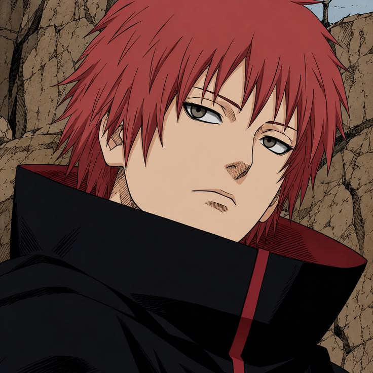
Sasori
Aldea de origen: Sunagakure.
Habilidad principal: Marionetas humanas y venenos.
Personalidad: Frío, paciente y obsesionado con las marionetas.
Función en Akatsuki: Capturar a los Bijū junto con su compañero.
Historia: Sasori perdió a sus padres cuando era niño y aprendió a fabricar marionetas. Con el tiempo convirtió su propio cuerpo en una marioneta y se unió a Akatsuki.
Dato curioso: Conservó su corazón humano para mantener su cuerpo funcionando.
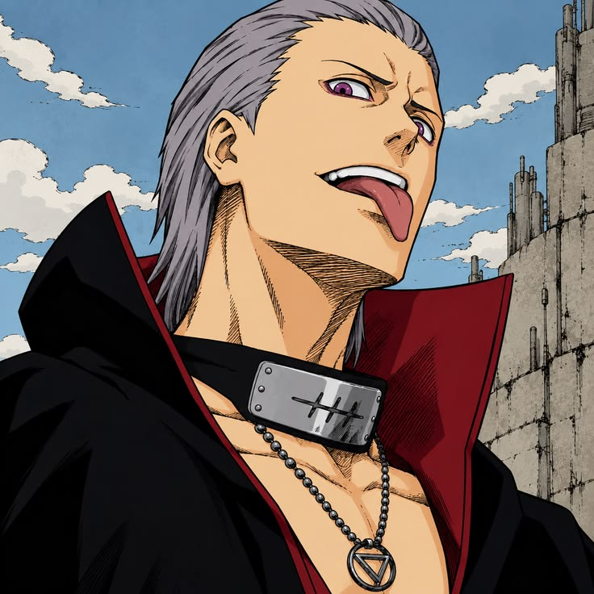
Hidan
Aldea de origen: Yugakure.
Habilidad principal: Ritual de inmortalidad y técnicas de maldición.
Personalidad: Violento, provocador y fanático de su religión.
Función en Akatsuki: Capturar a los Bijū junto con Kakuzu.
Historia: Hidan practicaba la religión de Jashin y obtuvo la capacidad de sobrevivir a heridas mortales. Se unió a Akatsuki y formó equipo con Kakuzu.
Dato curioso: Podía compartir con su víctima el daño que se provocaba a sí mismo durante su ritual.
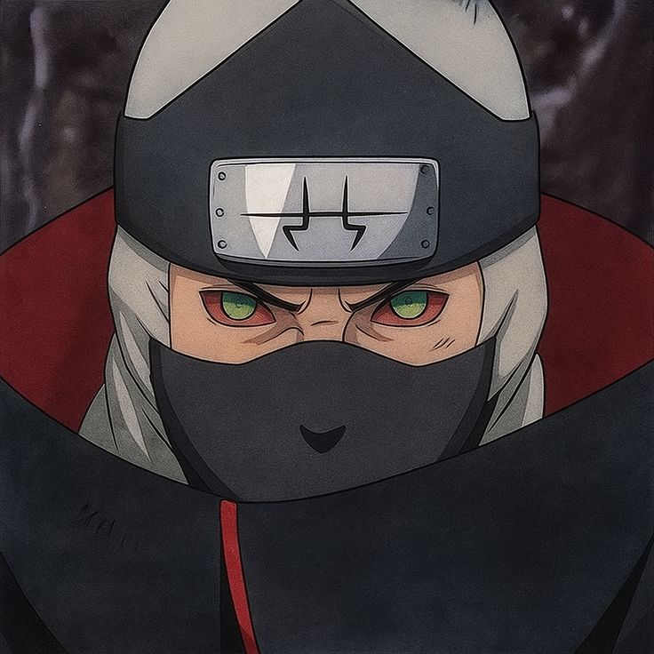
Kakuzu
Aldea de origen: Takigakure.
Habilidad principal: Hilos negros y uso de múltiples naturalezas de chakra.
Personalidad: Codicioso, pragmático y desconfiado.
Función en Akatsuki: Capturar a los Bijū junto con Hidan.
Historia: Kakuzu fue un ninja de Takigakure que sobrevivió durante muchos años gracias a su técnica de hilos negros, con la que podía reemplazar órganos y utilizar corazones ajenos.
Dato curioso: Acumulaba recompensas y dinero como una de sus principales motivaciones.
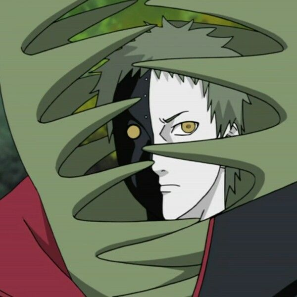
Zetsu
Aldea de origen: No tiene una aldea ninja convencional.
Habilidad principal: Espionaje, camuflaje y desplazamiento bajo tierra.
Personalidad: Misterioso, observador y manipulador.
Función en Akatsuki: Recopilar información y vigilar las actividades de la organización.
Historia: Zetsu estaba dividido en una parte blanca y otra negra. La parte blanca podía crear copias y camuflarse, mientras que la parte negra manipulaba acontecimientos para cumplir sus propios objetivos.
Dato curioso: Zetsu Negro tuvo un papel fundamental en los acontecimientos que llevaron al regreso de Kaguya Ōtsutsuki.